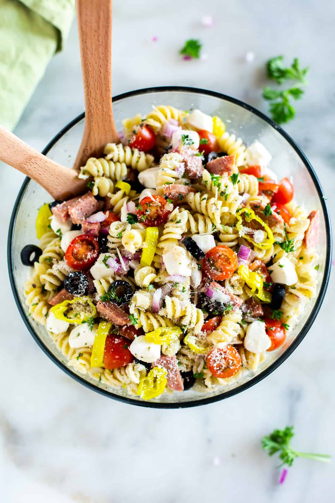

Italian Pasta Salad

Description
This Italian pasta salad that's loaded with tri-color rotini pasta, salami, bell peppers, and mozzarella is quick to make and full of flavor for a delicious summer meal.
This simple Italian pasta salad comes together quickly with salami, colorful vegetables, and flavorful salad dressing.
Ingredients
- Pasta: This colorful Italian pasta salad recipe starts with tri-color rotini pasta.
- Salami: Finely diced Italian salami lends meaty, salty flavor.
- Vegetables: You’ll need green and red bell peppers, a red onion, and canned black olives.
- Cheese: Small fresh mozzarella balls add creaminess and rich bursts of flavor. Shredded Parmesan cheese, meanwhile, is the perfect finishing touch.
- Dressing: You’ll need a cup of Italian-style dressing and three packages of dry Italian-style salad dressing mix.
Steps
- Boil the pasta until tender-yet-firm.
- Combine the pasta, salami, veggies, and mozzarella in a bowl.
- Toss in salad dressing, then stir in the dressing mix.
- Sprinkle with Parmesan before serving.